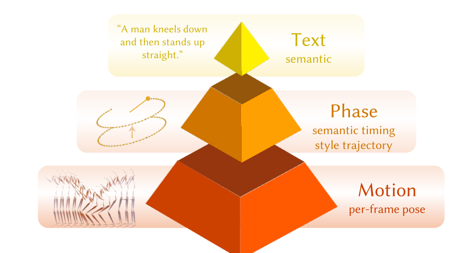
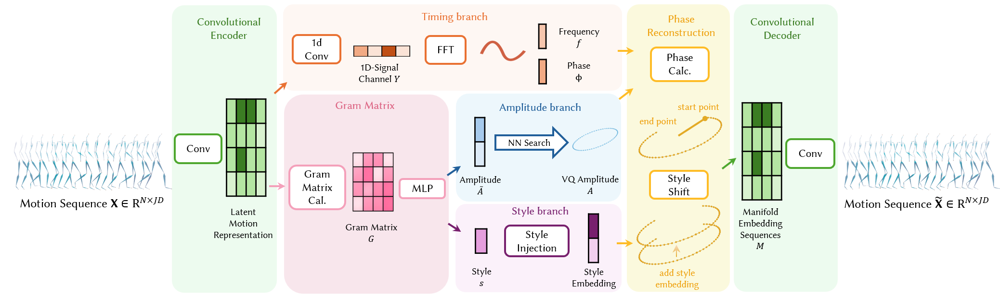
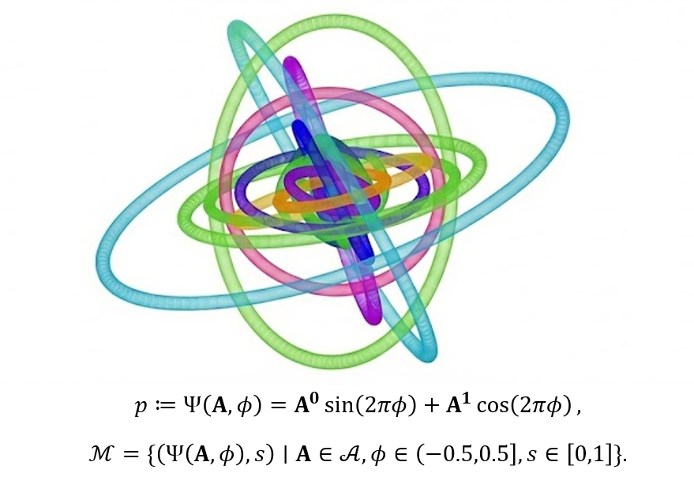
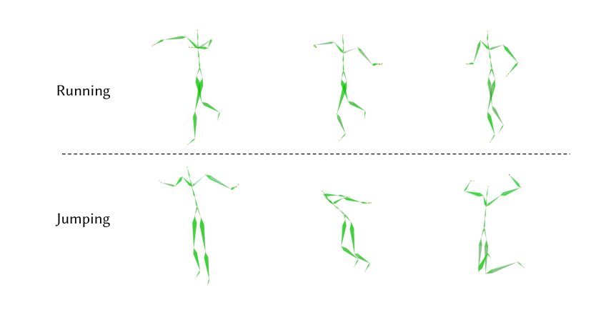
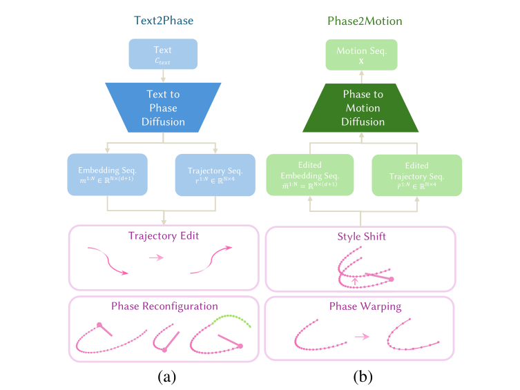
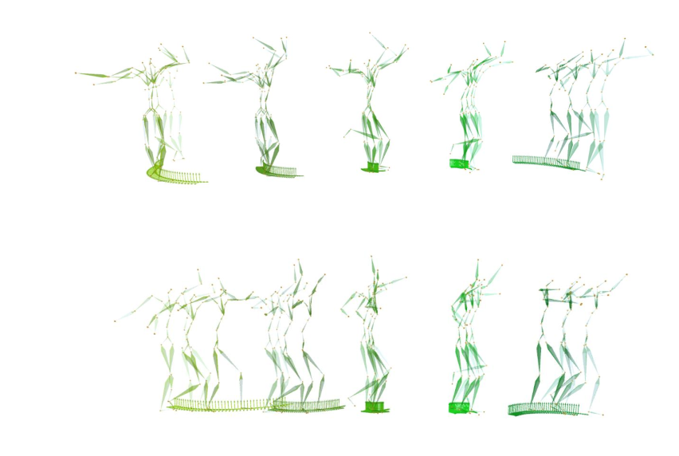
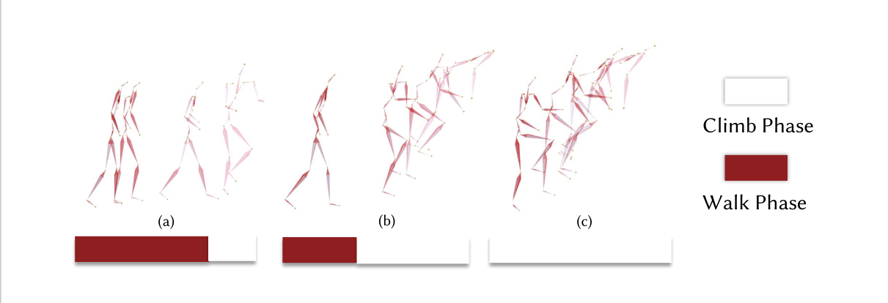
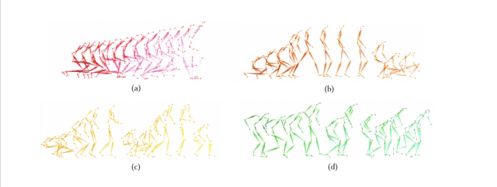
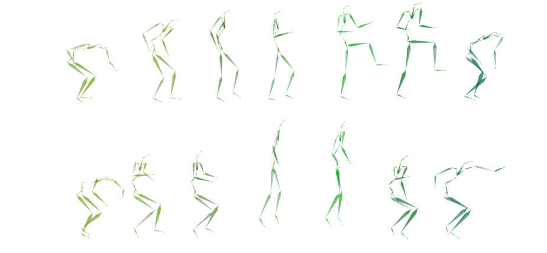

Paper Video
Abstract
We introduce stylized phase manifolds, a compact, interpretable latent representation that disentangles motion content (e.g., "jumping", "walking"), the temporal structure (e.g., motion cycle frequency, gait timing), and style (i.e., how the motion is performed). Learned in an unsupervised manner and inherently low-dimensional, the manifold offers intuitive and flexible editing. Building on this representation, we develop a diffusion-based motion generator that enables fine-grained control over semantic, temporal, and stylistic aspects of motion. To connect high-level intent with low-level motion, we treat the stylized manifold as an intermediate representation, a structured bridge between natural language and motion. By first mapping text into this manifold, our two-stage pipeline improves control over text-based motion generation, while producing high-quality, diverse motion outputs.

Stylized Manifold



Diffusion Pipeline

Text to phase maps a prompt to manifold embeddings and trajectories that support reconfiguration operations such as concatenation, repetition, deletion, and permutation. Phase to motion then synthesizes motion from the edited embeddings and trajectory, aligning semantic, timing, stylistic, and spatial constraints.
Motion Editing and Control




Acknowledgements
This work was supported in part by the European Research Council (ERC) under the European Union's Horizon 2020 Research and Innovation Programme (ERC Consolidator Grant, agreement No. 101003104, MYCLOTH) and by the EU Commission's Horizon Europe program (grant No. 101178362). Open access publishing was facilitated by ETH Zurich, as part of the Wiley-ETH Zurich agreement via the Consortium Of Swiss Academic Libraries.